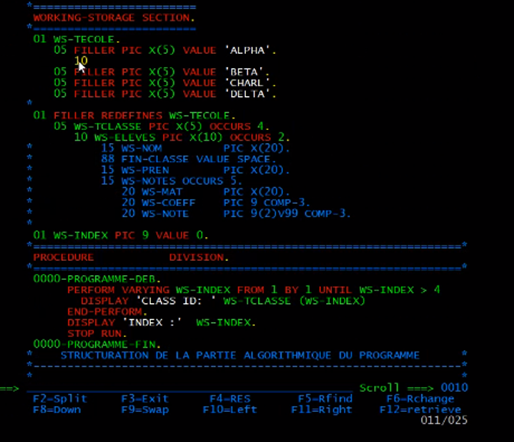

FAH BIKE est un ERP, un système de gestion des données d'une entreprise de vélos utilisant le langage COBOL.
COBOL est un langage toujours utilisé dans les systèmes critiques des banques et des assurances en raison de sa robustesse et de sa compatibilité avec les mainframes modernes.
Sa syntaxe claire le rend idéal pour gérer des données complexes et des transactions à grande échelle.
TELECHARGER LE PDF DU PROJET
